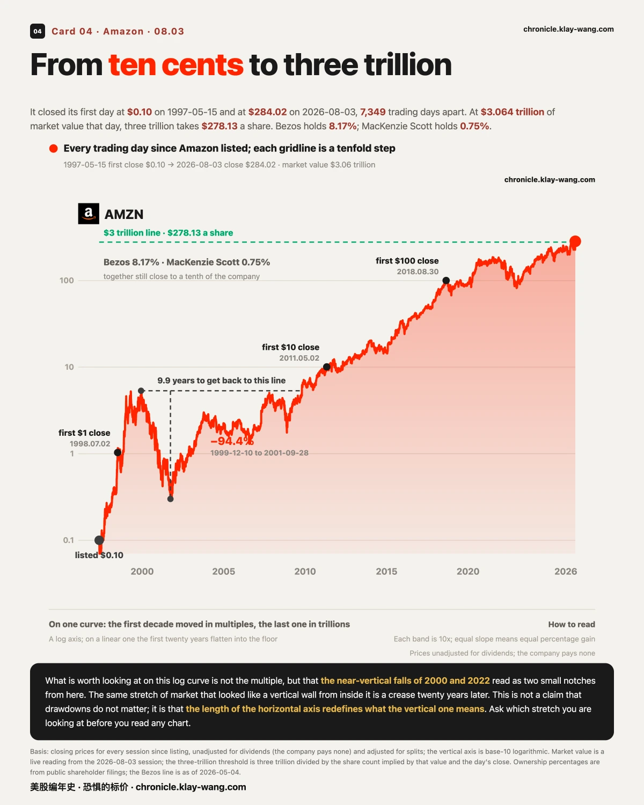
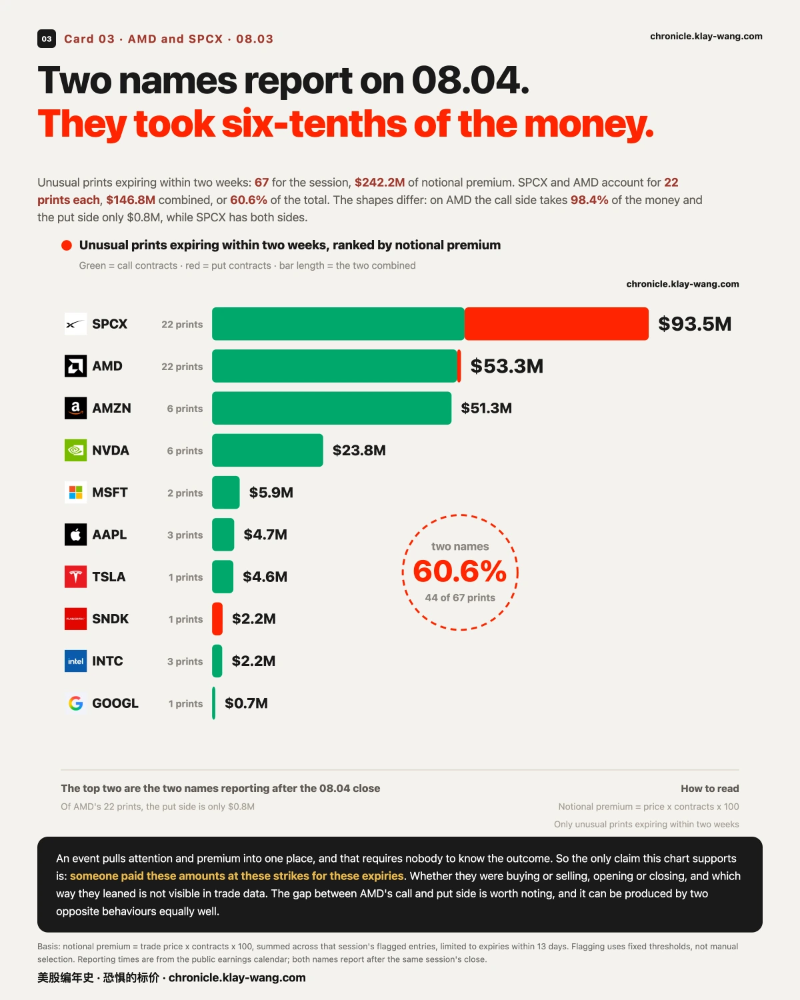
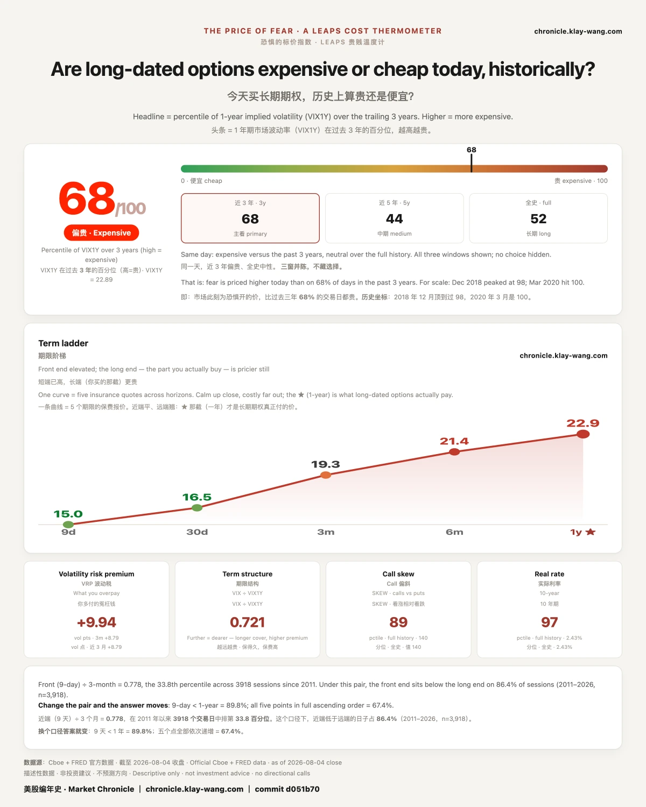

亚马逊站上三万亿，贝索斯准备要卖40.7亿 ？·08-03
同一天、同一个到期日，给闪迪买一年保险要价 110.0，给标普只要 18.2，最贵的高 6.0 倍，中位数 42.5。
两周内到期的异常成交，SPCX 与 AMD 两家吃掉全天权利金的 60.6%，而这两家就在 08.04 收盘后交卷。
十六只在涨，涨幅却不按板块走
一句话：这一天涨跌是同向的，但属于哪个板块解释不了任何一只票涨了多少。
08.03 收盘，17 只观察标的里 16 只上涨。涨幅前六位是闪迪 6.03%、Meta 6.02%、SPCX 5.68%、微软 4.93%、谷歌 A 类 4.88%、亚马逊 4.58%。唯一收跌的是苹果，1.78%。

如果板块这个词有解释力，同板块的票当天应该走得差不多。当天不是这样。存储两只，闪迪 6.03%、美光 0.79%，差 5.24 个百分点；芯片这一批，英伟达 2.93%、超微 1.78%、英特尔 0.89%、博通 0.76%、台积电 0.46%，最高的是最低的 6.37 倍。反过来，涨幅挤在 4.4% 到 6.0% 这一档的是 Meta、微软、谷歌两类、亚马逊，这四家不共用一个板块标签，当天却走得几乎一样。
能说的只有一句：当天的涨幅按公司分组比按板块分组更整齐。至于为什么这四家整齐、存储那两只分裂，成交数据里没有答案，我们不替它编一个。
这条判断可以被推翻，条件写在这里。如果接下来几个交易日存储两只重新同向同幅、而那四家开始各走各的，那么今天这个形状只是单日噪音，本条收回。如果分裂持续，那说明市场正在按公司而不是按板块定价，这件事比今天涨了多少更值得记。
同一份保险，最贵的贵 6 倍
一句话：这张表量的是一年后的不确定性现在标价多少，不是谁会涨谁会跌。
把 17 只票一年后到期的期权拉齐，每只取最贴现价的那一档，读它的隐含波动率。最前面四只是闪迪 110.0、美光 81.4、英特尔 77.7、SPCX 72.9；最后两只是纳指 25.6、标普 18.2。最贵的是最便宜的 6.0 倍。
这不是几个异类。17 只里有 13 只的要价在标普的两倍以上，中位数落在 42.5。被市场认为一年内可能走出很宽范围的，是这批票里的大多数。
把它和节目一放在一起看，才是当天真正的样子：涨跌高度同向，定价高度分裂。一天之内 16 只一起涨，说明短期的驱动是共同的；而一年期的要价差 6 倍，说明市场对一年后这些公司各自会变成什么样的看法完全不共同。同向的是今天，分裂的是明年。
要注意这个数说的是什么。高波动只意味着市场认为可能走出的范围宽，不区分往上宽还是往下宽。把它读成看好或看坏，都是往数字里塞它没有的东西。
真正可跟踪的是这个倍数本身。它什么时候收窄，比它今天是多少更值得记。
口径：英特尔与亚马逊那两只的到期在 501 天后，其余 15 只在 410 天后，卡上已用符号标出，跨票比较时须知两者不同。读数取当日收盘后，全部为实测值，未做插值或拟合。
从一毛到三万亿
一句话：那两段几乎垂直的下坠，在今天的坐标系里只是两个小凹口。
亚马逊 1997.05.15 上市首日收 0.10 美元，2026.08.03 收 284.02 美元，中间隔了 7349 个交易日。当日市值 3.064 万亿美元，按这个市值反推，站上三万亿需要每股 278.13 美元。08.03 盘中摸到 287.16，是它上市以来的最高价，收盘比这个价位低 1.09%。

三个台阶：首破 1 美元在 1998.07.02，首破 10 美元在 2011.05.02，首破 100 美元在 2018.08.30。
中间那一段常被略过。从 1999.12.10 到 2001.09.28，它跌了 94.4%，然后用了 9.9 年才重新回到那条线上。同一段行情，身处其中的人看到的是一堵竖直的墙，二十年后的坐标系里只是一道褶皱。
这不是在说下跌不重要。它说的是横轴的长度会重新定义纵轴的意义：同一组数据，把时间轴拉长十倍，结论可以完全相反，而两次读的都是真数。所以看任何一张长期曲线之前，先问自己看的是哪一段，以及这一段是谁替你选的。
三万亿这天，那份文件的日期也是 08.03
一句话：把内部人卖出当作卖出理由，在这家公司上从没成立过。

就在市值站上三万亿的同一天，一份拟售出申报递了上去：贝索斯计划卖出 1500 万股，文件上写的金额是 40.737 亿美元。
先看那个金额怎么来的。40.737 亿除以 1500 万股等于 271.58，那是 07.31 的收盘价，不是 08.03 的 284.02。按 08.03 实际收盘算，这批股票值 42.6 亿。文件用的是申报当时能引用的最近价格。
再看另一个日期，它比金额重要。这笔卖出依据的是一份 2025.11.14 就设立好的预定交易计划，比这轮财报、比周一那根大阳线都早了九个月。这类计划的存在意义正是如此：事先约定好在什么时点卖多少，之后不再临时决定，用来隔开信息优势的嫌疑。所以看到三万亿当天创始人减持这句话时，真正该问的不是他看到了什么，而是这个日期是谁定的、什么时候定的。答案是他自己，九个月前。
把时间拉长再看一遍。他本人名下 232 份内部人申报逐份拆开，只留公开市场卖出，剩下 1684 笔，分布在 151 个交易日，聚成 36 轮减持，累计 8.24 亿股（已按拆股折算）、名义 492 亿美元。这 36 轮里有 27 轮在一年后价格更高，占 75.0%。最好的一轮结束于 2019.08.02，之后一年上涨 70.7%；最差的结束于 2021.11.04，之后一年下跌 47.7%。中间还有一段空窗：2004.11.17 到 2008.02.15 的 39 个月里，他一股没卖。
这张图最容易被读成跟着创始人卖就错了，那是把结果当成方法。他卖股票的理由从来不在股价里：预定的分批计划、税、离婚分割、火箭公司的开销。这些理由跟接下来一年会发生什么无关。
所以那 75% 更像是一家二十年涨了几千倍的公司自己的基率：在这条曲线上随便挑一天，之后一年多半是涨的。要证明他卖点选得差，得先证明这 75% 显著低于随机挑 36 天的成绩，而不是拿 75% 本身当证据。这两件事看起来像同一件，其实差着一个对照组。
口径：拟售出申报说明打算卖，成交之后还会有另一份申报说明已经卖了，截至发稿对应的成交申报尚未出现。图上只画已成交的卖出，08.03 那份不在图内。232 份里剔除了赠与、行权与抵税，其中赠与 167 笔。股数按 2022.06.06 的二十拆一统一折算。2003 年 2 月的 6 份为电子化之前的格式，未纳入。
今晚交卷前，六成的钱压在两家身上
一句话：一个事件把权利金吸到一处，这件事本身不需要任何人知道结果。

到期在两周以内的异常成交，收盘口径全天 67 笔、名义权利金 2.42 亿美元。其中 SPCX 与 AMD 各 22 笔，两家合计 1.47 亿美元，占 60.6%。这两家在 08.04 收盘后同时发布财报。
形状还不一样。AMD 那 22 笔里看涨一侧吃掉 98.4% 的钱，看跌一侧只有 83 万美元；SPCX 是两边都有人，看涨 5408 万、看跌 3942 万。
能说的只有一句：有人在这些价位、为这两个到期日付了这些钱。是买是卖、是开仓还是了结、押的是哪个方向，成交数据里全都看不见。AMD 那个悬殊值得记下来，但同一个数字可以由完全相反的两种做法产生：可能是有人买入看涨押上行，也可能是有人卖出看涨收权利金，两者在成交记录里长得一模一样。
这一条今晚就开奖，条件写在这里。收盘后交卷，明天开盘就能看见结果。我们不猜方向，只记下开奖前的这个数，明天回来对账。

温度计
我有个恐惧温度计，量的是市场现在花多少钱，给未来一年买保险。保险越贵，说明市场越怕。
今天读数 68.1（满分 100），意思是这份保险的价钱贵到了过去三年的前 31.9%。换两把尺子看：近 5 年的位置是 44.0，全史是 52.1，绝对读数 22.9。
期限阶梯从 9 天的 13.28 一路抬到一年的 22.90，中间是 30 天 15.86、3 个月 18.93、6 个月 21.20。短端平静，长端也就是你真正买的那一截最贵。
再看另一把独立的尺子，波动率期货九个月份从 17.95 抬到 22.58，首尾相差 25.79%，中间没有一个月份比它前面那个低。两把尺子给出同一个形状：越远越贵，一路向上，没有折返。
这个形状说明的是价格，不是预言。它只告诉你越远的月份现在标的价越高。一条常年向上的曲线，多数日子后面什么都没发生。值得跟踪的不是今天这个形状，而是它哪天不再是这个形状。
Same day, same expiry: one year of cover on SanDisk is priced at 110.0 while the S&P asks 18.2, a spread of 6.0 times, with a median of 42.5.
SPCX and AMD together took 60.6% of the day's unusual premium in options expiring within two weeks, and both report after the 08.04 close.
1 · Sixteen higher, and sector labels explain none of it
In one line: direction was shared that day, but what a name belongs to explains none of how far it moved.
16 of 17 closed higher on 08.03. The six largest gains were SanDisk 6.03%, Meta 6.02%, SPCX 5.68%, Microsoft 4.93%, Alphabet A 4.88% and Amazon 4.58%. Apple was the only decline, at 1.78%.
If the word sector carried explanatory weight, names inside one would move together. They did not. The two storage names split by 5.24 points, SanDisk 6.03% against Micron 0.79%. Across the chip names, Nvidia 2.93%, AMD 1.78%, Intel 0.89%, Broadcom 0.76% and TSMC 0.46%, the top is 6.37 times the bottom. Meanwhile the cluster between 4.4% and 6.0% is Meta, Microsoft, both Alphabet lines and Amazon, four companies that share no single sector label and moved almost identically.
The only claim this supports is that the day sorted more cleanly by company than by sector. Why those four moved together and the storage pair split is not in trade data, and we are not inventing a reason for it.
This can be refuted, and here is the condition. If the storage pair moves together again over the next few sessions while those four begin to diverge, today's shape was single-day noise and we withdraw this. If the split persists, the market is pricing by company rather than by sector, and that matters more than the size of today's move.
2 · The same cover, six times the price
In one line: this prices next year's uncertainty, not who goes up or down.
Line up options expiring about a year out across seventeen names, take each one's closest-to-spot strike, and read its implied volatility. The four dearest are SanDisk 110.0, Micron 81.4, Intel 77.7 and SPCX 72.9; the cheapest are the Nasdaq 100 at 25.6 and the S&P at 18.2. The top reading is 6.0 times the bottom.
This is not a handful of outliers. 13 of the 17 are asked more than twice what the S&P is asked, and the median sits at 42.5.
Put beside the first section, that is the shape of the day: direction highly shared, pricing highly split. Sixteen names rising together says the short-term driver is common to them. A six-fold spread on one-year cover says there is nothing common about what the market expects these companies to look like a year out. Today is shared. Next year is not.
Note what the number says. High volatility means the expected range is wide, and it does not distinguish wide to the upside from wide to the downside. Reading it as bullish or bearish puts something into the number that is not there.
The multiple itself is the thing to track. When it narrows will matter more than what it reads today.
Basis: Intel and Amazon expire in 501 days, the other fifteen in 410, marked on the card, and that difference matters when comparing across names. Readings are taken after that day's close and are measured values with no interpolation or fitting.
3 · From ten cents to three trillion
In one line: the near-vertical falls read as two small notches from here.
Amazon closed its first day at 0.10 dollars on 1997.05.15 and at 284.02 on 2026.08.03, 7349 trading days apart. Market value that day was 3.064 trillion, and on that share count three trillion takes 278.13 a share. It printed 287.16 intraday, its highest price since listing, and closed 1.09% under that print.
Three steps on the way: first close above 1 dollar on 1998.07.02, above 10 on 2011.05.02, above 100 on 2018.08.30.
The stretch in between is usually skipped. From 1999.12.10 to 2001.09.28 it fell 94.4%, and it took 9.9 years to get back to that line. What looked like a vertical wall from inside it is a crease twenty years later.
This is not a claim that drawdowns do not matter. It is that the length of the horizontal axis redefines what the vertical one means: the same data, with the time axis stretched tenfold, supports the opposite reading, and both readings are of real numbers. So ask which stretch you are looking at before you read any long chart, and who chose that stretch for you.
4 · Three trillion, and a filing dated the same day
In one line: treating insider selling as a reason to sell has never worked on this name.
On the very day market value crossed three trillion, a notice of proposed sale was filed: Bezos plans to sell 15 million shares, and the filing puts the value at 4.0737 billion dollars.
Start with where that figure comes from. 4.0737 billion divided by 15 million is 271.58, the 07.31 close, not the 284.02 close of 08.03. At the actual 08.03 close the same block is worth 4.26 billion. The filing used the most recent price available when it was submitted.
The other date matters more than the amount. The sale runs under a pre-arranged trading plan adopted on 2025.11.14, nine months before this earnings report and before Monday's rally. That is exactly what such plans are for: fix in advance how much to sell and when, then stop deciding, which separates the trade from any information advantage. So when you read that the founder sold on the day it crossed three trillion, the question worth asking is not what he saw, but who set that date and when. He did, nine months ago.
Now stretch the time axis. Splitting his 232 personal insider filings line by line and keeping only open-market sales leaves 1684 transactions across 151 trading days, grouped into 36 selling windows: 824 million shares split-adjusted, 49.2 billion dollars of notional. In 27 of those 36 the price was higher a year later, or 75.0%. The best window ended 2019.08.02, followed by a 70.7% gain; the worst ended 2021.11.04, followed by a 47.7% decline. There is also a gap: across the 39 months from 2004.11.17 to 2008.02.15 he did not sell a share.
The easy misreading is that following the founder out would have cost you, which mistakes an outcome for a method. His reasons were never in the share price: pre-set plans, taxes, a divorce settlement, a rocket company to fund. None of those say anything about the next twelve months.
So the 75% looks less like bad timing and more like the base rate of a company that compounded for twenty years: pick any day on that curve and the year after is usually higher. To show his timing was poor you would have to show 75% is meaningfully below what 36 randomly chosen days would have produced, rather than offering the 75% as the evidence itself. Those two look like the same claim. They differ by a control group.
Basis: a notice of proposed sale states an intent; a separate filing reports a completed sale, and as of publication that second filing has not appeared. The chart shows completed sales only, so the 08.03 filing does not appear on it. Gifts, exercises and tax withholding were excluded from the 232, with 167 gift entries among them. Share counts are restated for the 20-for-1 split of 2022.06.06. Six filings from February 2003 predate electronic filing and are not included.
5 · Six-tenths of the money, on two names reporting tonight
In one line: an event pulls premium into one place, and that requires nobody to know the outcome.
Unusual prints in options expiring within two weeks came to 67 for the session on a closing basis, 242 million dollars of notional premium. SPCX and AMD account for 22 prints each, 147 million combined, or 60.6% of the total. Both report after the 08.04 close.
The shapes differ. On AMD the call side takes 98.4% of the money and the put side only 827 thousand dollars. On SPCX both sides are there, 54.1 million in calls against 39.4 million in puts.
The only claim this supports is that someone paid these amounts at these strikes for these expiries. Whether they were buying or selling, opening or closing, and which way they leaned is not visible in trade data. The gap on AMD is worth noting, and the same number can be produced by opposite behaviours: someone buying calls for upside, or someone selling calls to collect premium, look identical in a print.
This settles tonight, and here is the condition. They report after the close and the result is visible at tomorrow's open. We are not guessing the direction. We are recording the number before the result and coming back to reconcile.
Thermometer
One year of cover is priced in the 68th percentile of the past three years, which reads expensive. Two other windows: 44.0 over five years and 52.1 over the full history, with the absolute reading at 22.9.
The term ladder climbs from 13.28 at nine days to 22.90 at one year, by way of 15.86 at thirty days, 18.93 at three months and 21.20 at six months. The front end is calm and the long end, the part you actually buy, is the priciest.
On a second and independent measure, the nine futures months climb from 17.95 to 22.58, 25.79% front to back, with not one month below the one before it. Two rulers, one shape: the further out, the dearer, all the way, with no reversal.
That shape is a statement about prices, not a forecast. All it says is that the further out you look, the more the market charges today. A curve that slopes up most of the time is followed by nothing most of the time. What is worth tracking is not today's shape but the day it stops looking like this.
本站不提供投资建议，不预测方向，不做择时。